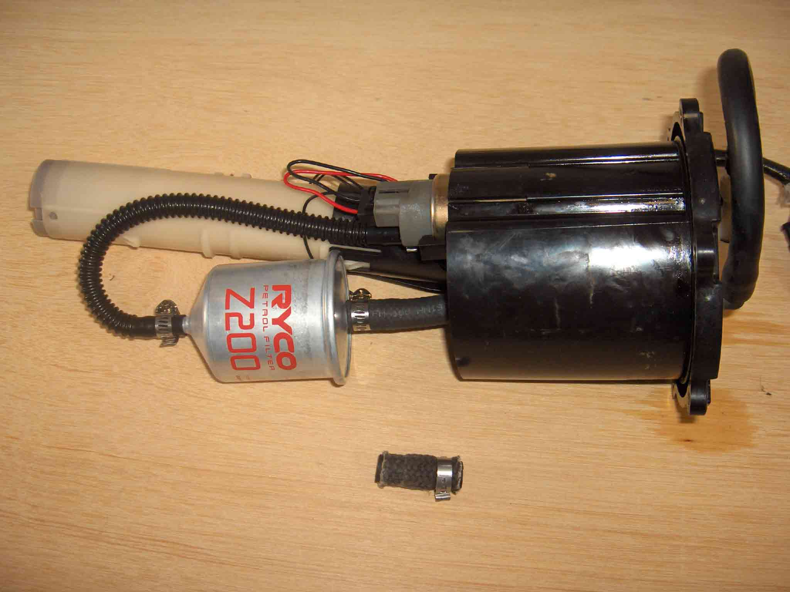
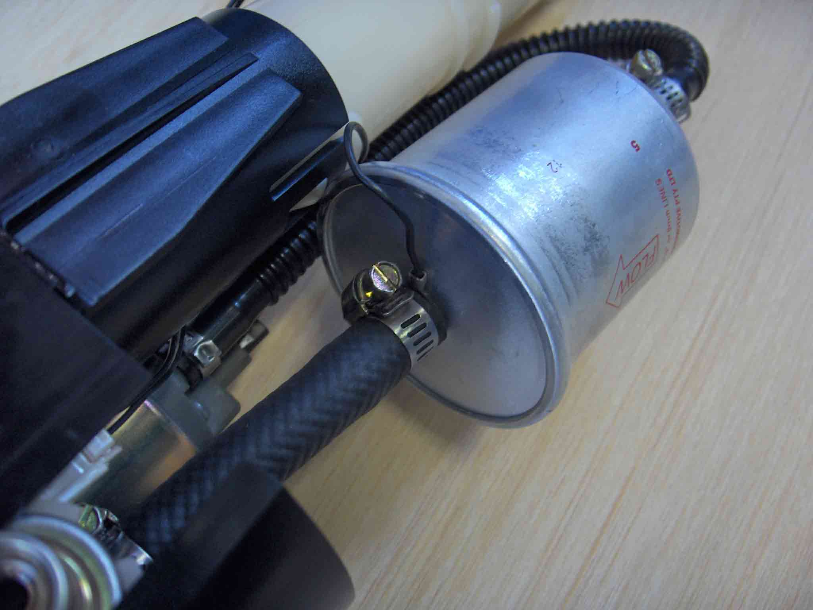
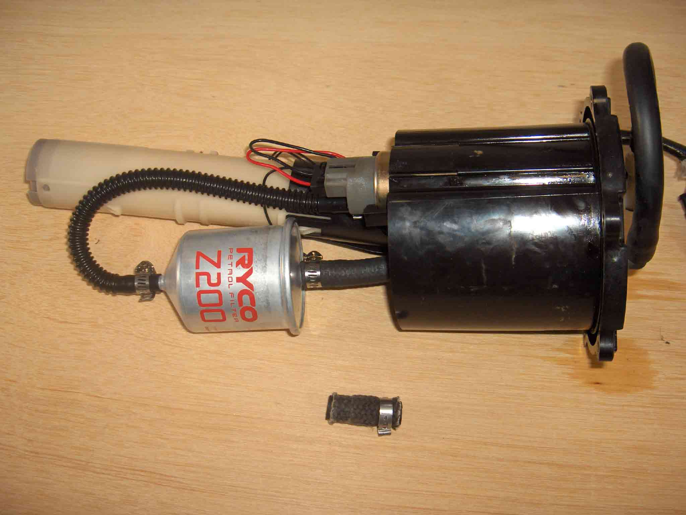
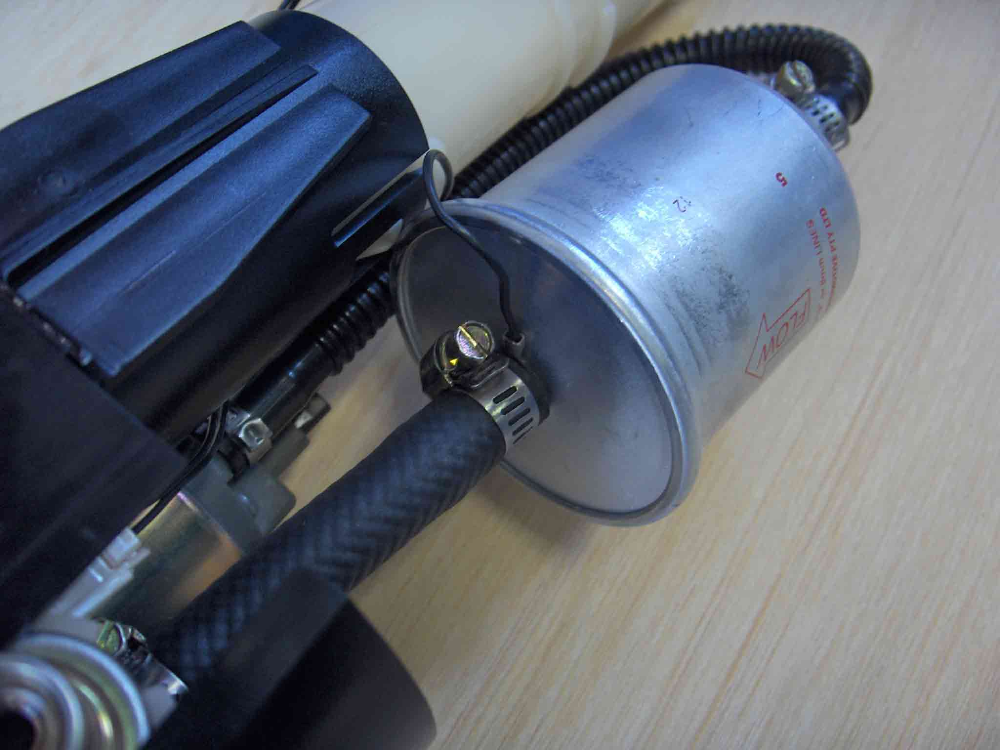

|  |  |
| Ryco Filter Fitted - original hose in foreground | Ryco Filter Fitted - shows outlet hose bend |
|  | |
| Fit the earth link between hose & nipple |
The fuel filter resides inside the tank, in an assembly which includes the fuel pump and gauge sender unit.
The original part is Fiaam FT5452, which is also used by the Aprillia Futura. Part # 8102971. It is 55mm dia (max) & has a 70mm body length.
(from the Fiaam website)
"The components of injection systems are much more sensitive to contamination than carburettor
systems. Therefore these systems always have a fuel filter, either an in-tank or an in-line
filter. The fuel pump, usually mounted in the fuel tank, aspirates the fuel in the tank and
pumps it via the filter element to the injectors. The filter element is finer than that
required by a carburettor system: 5 to 7 microns. The element is mounted in a metal/plastic
(conductive) housing and also absorbs the water in the fuel."
Alternatives are:-
Ryco Z200
Baldwin BF1049
The filter uses 8mm hose. The inlet hose is 10mm outside dia, and the outlet hose is 15mm outside dia. If replacing the FIAMM filter with one of the alternatives above, the diameter is slightly larger & body length a little longer. The body joins at the delivery end, which tends to make it stick out at an angle, which would make it impossible to slip back into the tank. To fix this, the outlet tube must be increased to 80mm long, to allow a bend (see pics below). So you'll need 80mm of 8mm high pressure fuel hose, and 3 hose clamps to suit 10 - 15 mm hose.
|  | |
| Ryco Filter Fitted - original hose in foreground | Ryco Filter Fitted - shows outlet hose bend |
|  | |
| Fit the earth link between hose & nipple |
As an aside, I'll swear that the fuel pump / filter / gauge unit was installed incorrectly at the factory. I marked it's orientation before I dismantled it. On re-assembly, it leaked. On closer inspection, I noticed an indentation / tag that was meant to set the correct orientation. When I used this, it sealed fine.